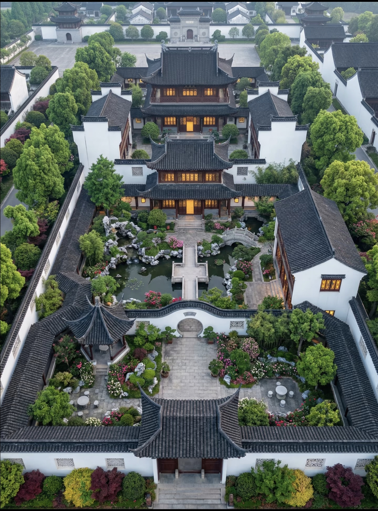

中式古建筑严格遵循中轴线对称布局，正门作为院落开端，划分内外空间，兼具礼仪分界与防卫作用，台阶形制对应传统等级规制。
江南园林经典造景元素，圆月造型寓意圆满吉祥，利用框景手法分隔空间，藏景借景，营造移步换景的古典园林意境。
古典园林核心营造智慧，遵循"虽由人作，宛自天开"，引水造池、堆叠假山，将自然山水微缩于院落，实现人与自然相融。
采用传统榫卯抬梁木结构，无铁钉承重，坡屋顶快速排水，飞檐翘角兼顾防风防雨与建筑美学，为院落核心主体建筑。
凉亭通透开敞，供游园休憩观景，攒尖屋顶利于快速排水，适配江南多雨气候，是园林重要景观休闲建筑。
白墙黛瓦为江南古建标志，高出屋面的山墙可防火隔火、防风遮阳，层叠造型兼具实用功能与古典审美。
低平曲桥连通水陆，划分水面空间层次，造型简约雅致，贴合园林整体意境，是古典园林标志性景观构件。
点击下方按钮，镜头自动移动缩放，游览全园景点